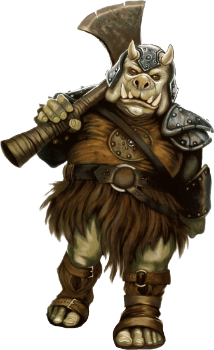

Gamorrean

Tratti dei Gamorrean
| Aumento dei punteggi caratteristica | Il punteggio di Forza aumenta di 2 e la Costituzione di 1 |
| Eta' | I gamorrean raggiungono la maturita' intorno ai 13 anni e vivono fino a circa 70 anni |
| Allineamento | Caotico neutrale |
| Taglia | Media |
| Velocita' | 9m |
| Robustezza Gamorreana | I tuoi punti ferita massimi aumentano di 1 ed aumentano di 1 punto ogni volta che guadagni un livello. Inoltre ottieni vantaggio nei tiri salvezza su Costituzione |
| Armi Gamorreane | Sei competente nell'utilizzo delle armi: vibro-ascia, vibro-mazza e vibro-spada |
| Attacchi Selvaggi | Se infliggi un danno critico con un'arma corpo a corpo puoi tirare uno dei dadi del danno dell'arma una volta in piu' ed aggiungerlo al danno extra del colpo critico |
| Linguaggi | Sai parlare, leggere e scrivere Gamorrese. Sei in grado di comprendere il Galattico Base, ma non sai parlarlo |